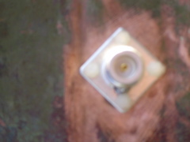
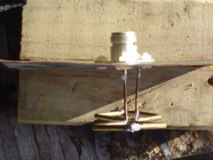

{kind=link}
{kind=link}
This one is a test version spaced 1/4 wavelength off of the relector.
Having a slower speed in the wire, means that the frequency shifts downward, so the wire needs to be shorter to resonate at the same frequency. The velocity factor is going to vary with different wire thicknesses. In our case the overall wire length should be reduced by 4% to 5%. Plastic close to the wire will change the velocity factor too, further reducing the speed of the radio wave. This happened to us, when we put the antenna inside a plastic case. Copper oxide on the wire will have this effect too, so an aging antenna is going to slowly detune to a lower frequency.
The velocity factor represents the percentage slowdown of the incoming signal in air, to the signal in the copper wire. This is the same affect you see with light going through water or glass (light being a radio wave). The light induces a wave in the electrons in the glass, but the speed of that induced wave is less than the speed of light in air. If you add both the original light's radio wave, and the slower induced wave in the material, you get a resultant wave that we see. When the light leaves the glass it speeds up again. The light isn't magically gaining energy. It has just stopped interacting with the electrons in the material. The material doesn't need to be conductive either, just a dialetric like plastic. In a dialectric, the radio wave alternates the polarization (alignment of charge) in the material, but no current flows.
The squares should also have been distorted into a rhombus, so that the long diagonal is about 1.3:1 that of the other. If the quads remain square, then the antenna has too high an impedance. Distorting the squares, drops this to 50 ohms. This can be done by making the squares into rectangles. The difference in side length isn't much, and the overall wire length doesn't change.
|
 |  |
| From the front (vertically polarized). | From the Back | Looking down on it when it is aligned for horizontal polarization (i.e. the diamonds are vertical) This one is a test version spaced 1/4 wavelength off of the relector. |